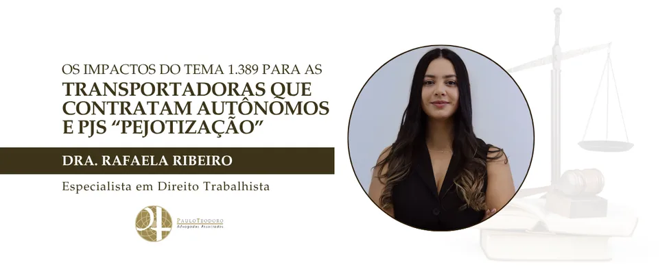

Os impactos do tema 1.389 para as transportadoras que contratam autônomos e pjs “pejotização”
O julgamento do ARE 1.532.603, submetido ao regime da repercussão geral (Tema 1.389), tem reflexos particularmente relevantes para as empresas de transporte rodoviário de cargas que estruturam parte de sua operação por meio de transportadores autônomos ou pessoas jurídicas.
O setor já foi diretamente impactado pelo posicionamento do Supremo Tribunal Federal na ADC 48, quando se reconheceu a constitucionalidade da contratação de transportador autônomo de cargas nos termos da legislação específica. O Tema 1.389 amplia esse debate ao tratar da competência para julgar alegações de fraude em contratos civis e da forma de distribuição do ônus da prova nesses casos.
Para as transportadoras, a principal repercussão está na redefinição do ambiente de risco processual. Se prevalecer o entendimento de que a Justiça Comum deve analisar, de forma originária, a validade dos contratos civis, as discussões sobre eventual fraude ou descaracterização da autonomia deixarão de ser automaticamente submetidas à Justiça do Trabalho. Isso altera a lógica tradicional do contencioso, especialmente quanto aà dinâmica probatória, que tende a seguir as regras do processo civil, afastando presunções genéricas de irregularidade.
Na prática, esse cenário pode trazer maior previsibilidade para modelos contratuais efetivamente estruturados com base na autonomia do transportador, na assunção de riscos próprios e na inexistência de subordinação jurídica. Contratos de agregamento, prestação de serviços por empresa individual e outras formas comuns no transporte de cargas passam a contar com respaldo mais consistente, desde que a realidade da operação confirme a independência do prestador.
Contudo, o julgamento não representa blindagem automática para o setor. A rotina do transporte rodoviário envolve elementos sensíveis: definição de rotas, cumprimento de prazos rígidos, padrões operacionais, controle logístico e, em alguns casos, exigências de exclusividade. Se essas circunstâncias extrapolarem os limites da coordenação contratual e revelarem subordinação típica, o risco de reconhecimento de vínculo permanece.
Cabe ressaltar, ainda, que há também o impacto no custo e na duração das disputas judiciais. A eventual necessidade de discutir a validade do contrato na Justiça Comum antes de qualquer repercussão trabalhista pode tornar o caminho processual mais longo e oneroso. Para empresas com grande volume de transportadores contratados, isso exige planejamento jurídico e acompanhamento permanente do contencioso.
Diante desse cenário, ganha relevo a necessidade de coerência entre contrato e prática. Não basta que o instrumento formal declare autonomia; é indispensável que o dia a dia da operação confirme essa independência. Revisão periódica de contratos, orientação das equipes operacionais e delimitação clara das responsabilidades de cada parte tornam-se medidas essenciais para reduzir exposição.
Resumindo, o Tema 1.389 não elimina riscos para as empresas de transporte rodoviário de cargas, mas redefine seus contornos. O foco deixa de ser apenas a forma da contratação e passa a concentrar-se na consistência entre o modelo adotado e a execução concreta do serviço. Para quem atua com organização e disciplina jurídica, o ambiente tende a ser mais previsível; para quem mantém estruturas apenas formalmente autônomas, a insegurança continuará presente.


Paulo Teodoro – Advogados Associados